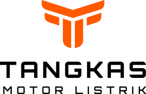

Operasional harian
Diskusikan jarak per hari, pola isi daya, kapasitas angkut, dan lokasi servis untuk setiap kota.

TANGKASMOTOR LISTRIKCari showroomTangkas untuk bisnis
Jelajahi kebutuhan armada, kendaraan khusus, pengadaan pemerintah, serta bentuk kemitraan yang pernah ditawarkan Tangkas.
Tangkas untuk usaha
Riset Tangkas menunjukkan kebutuhan kendaraan pengantaran, operasional, dan konfigurasi khusus. Permintaan bisnis sebaiknya dimulai dari penggunaan nyata, kota, jumlah unit, dan kebutuhan layanan.
Diskusikan jarak per hari, pola isi daya, kapasitas angkut, dan lokasi servis untuk setiap kota.
Materi Tangkas menampilkan P6 Pro Ambulance, sidebag pengiriman, pilihan baterai, aksesori, dan kemungkinan GPS sesuai permintaan.
Minta penjelasan tertulis tentang suku cadang, garansi, cakupan service corner, dan layanan lokasi sebelum menambah armada.
48 × 28 × 32 cm, bahan kanvas tahan air dengan dua lapis polyester, dan kapasitas gabungan sekitar 30–40 kg. Ukuran dan kemampuan angkut perlu diverifikasi terhadap konfigurasi pesanan.
Pembelian institusi
Tangkas mengelompokkan produk E-Katalog menurut baterai SLA, Lithium, dan kendaraan khusus. Cocokkan identitas penyedia, model, sertifikat, dan entri yang berlaku langsung di sistem pengadaan.
| Kategori dalam katalog | Model yang ditampilkan |
|---|---|
| SLA | E6 Box, P6 Pro, V8 New, V8 Max, X7 New |
| Lithium | P6 Pro Lithium, X7 New Lithium |
| Kustom | P6 Pro Ambulance |
Daftar mengikuti halaman E-Katalog Tangkas, bukan jaminan setiap entri tetap aktif. Buka E-Katalog Tangkas
Jaringan kemitraan
Materi bisnis Tangkas pernah menawarkan Master Provinsi, Mitra Utama, dan Agen Resmi. Struktur, wilayah, persyaratan, serta biaya 2026 harus berasal dari proposal dan kontrak terbaru.
Peran mitra wilayah dengan pengelolaan oleh Tangkas menurut proposal lama. Minta status ketersediaan wilayah dan skema hak terbaru.
Konsep showroom resmi yang dikelola bersama dalam materi lama. Estimasi investasi dan hasil historis tidak dijadikan proyeksi baru.
Konsep agen dengan pengelolaan sendiri, identitas showroom Tangkas, dukungan teknis, dan pembelian unit awal menurut proposal lama.
Diskusi bisnis
Siapkan kota, peran yang diminati, lokasi, dan skala kebutuhan agar tim Tangkas dapat memberi ketentuan terbaru.
Arsip komersial
Nilai berikut hanya membantu memahami materi lama. Bukan penawaran investasi, royalti, atau perkiraan hasil yang berlaku saat ini.
Proposal lama mencantumkan kisaran investasi Rp1,25–7,5 miliar menurut wilayah dan manfaat 1% dari nilai pembelian produk di provinsi terkait. Status wilayah, hak, jangka waktu, dan manfaat harus ditetapkan dalam dokumen baru.
Materi lama menggunakan angka modal sekitar Rp1,2 miliar dan ilustrasi hasil setara 2,6% dari omzet bulanan. Dua slide tampak tidak konsisten mengenai alokasi pembelian unit (Rp130 juta vs Rp730 juta). Angka ini tidak dipakai untuk proyeksi usaha baru.
Proposal lama menyebut biaya bergabung Rp150 juta untuk lima tahun, lokasi milik mitra, serta pembelian awal minimal 30 unit tanpa buyback. Semua syarat perlu dokumen 2026 yang ditandatangani.
Sumber: materi skema bisnis pada situs Tangkas. Halaman mitra resmi